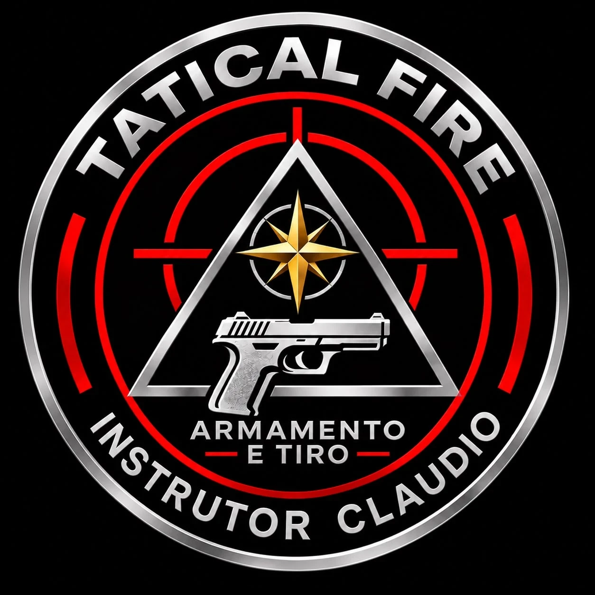
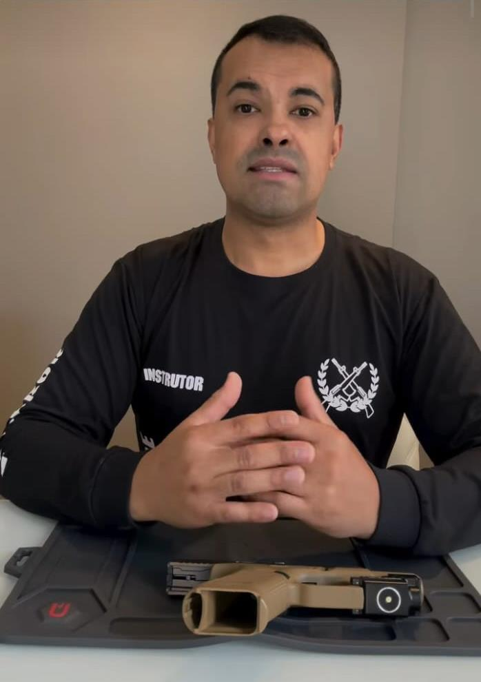
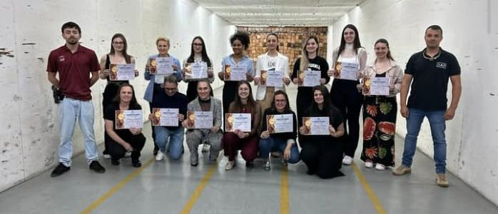

A Tatical Fire nasceu para levar instrução de armamento e tiro séria, responsável e acessível para Xanxerê e toda a região oeste de Santa Catarina.
Instrutor de Armamento e Tiro credenciado pela Polícia Federal, responsável pela aplicação de testes de capacidade técnica e pela condução dos cursos de tiro básico e defensivo da Tatical Fire.
Com uma didática direta e muito foco na correção individual, o Instrutor Cláudio compartilha diariamente no Instagram técnicas de empunhadura, manipulação segura, solução de panes e operação de diferentes plataformas — sempre com a mesma premissa: seja rápido e eficiente, confie na técnica.

Xanxerê · SCPreparar cada aluno para desenvolver confiança, controle e consciência durante a prática do tiro, com segurança acima de tudo.
Ser referência em instrução de armamento e tiro no oeste catarinense, reconhecida pela seriedade e pela qualidade técnica.
Técnica, disciplina, respeito à lei, ética e responsabilidade em cada orientação e em cada disparo.
Seja rápido e eficiente. Confie na técnica.
Uma trilha clara para você evoluir com segurança, no seu ritmo e com acompanhamento em cada etapa.
Regras de segurança, nomenclatura, postura, empunhadura e visada. A base de tudo.
Preparação e aplicação do teste de capacidade técnica com instrutor credenciado pela PF.
Panes, recargas e operação de diferentes plataformas: pistola, revólver e calibre 12.
Saque, transição de alvos a 7 e 12 metros, uso de abrigo e decisão sob pressão.

Mulheres integrantes da OAB de Xanxerê participaram de um treinamento especial conduzido pelo Instrutor Cláudio, reunindo orientações técnicas, conhecimento sobre armamento, segurança e atividades práticas de tiro.
Conhecimento gera confiança. Treinamento desenvolve habilidades. E segurança começa com responsabilidade.
Organizar turma para meu grupoConheça os cursos e escolha por onde começar.